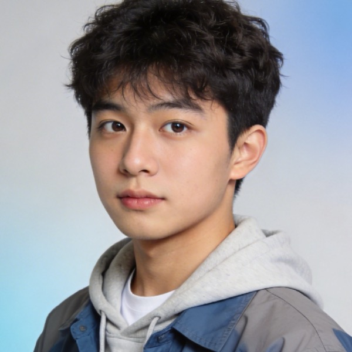
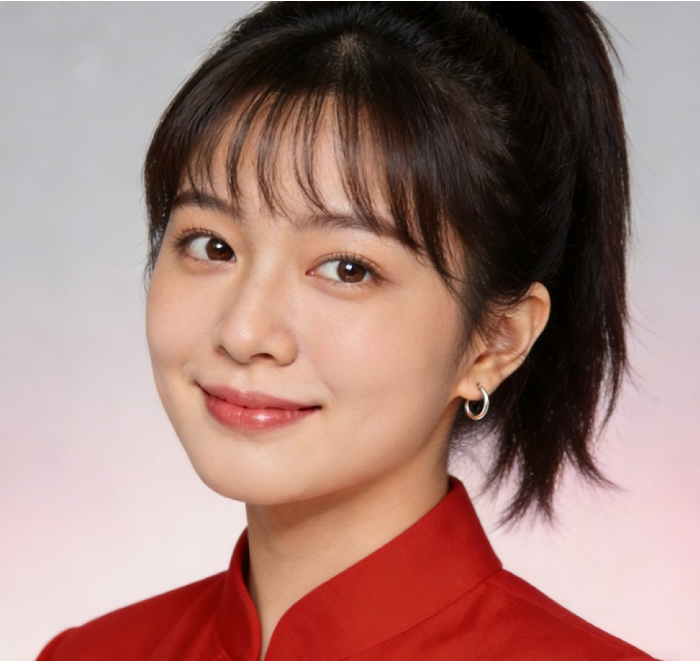

锦鲤
总调度
擅长在复杂目标里抓住关键机会，把方向、节奏和资源快速拧成一股绳。
Team Showcase
11 位 Agent，覆盖策略、设计、研发、知识、运营、质检等关键岗位。这里不只展示分工，也把团队协同的温度与气质放到台前。
People Wall
按既定坑位 3 / 4 / 4 排布，完整展示全部 11 位 Agent。
总调度
擅长在复杂目标里抓住关键机会，把方向、节奏和资源快速拧成一股绳。
本体智能业务专家
把模糊业务需求抽象成“对象-关系-属性”本体骨架，为售前方案与POC落地先定方向、再定边界。
本体智能数据专家
专注清洗脏数据、重构表结构与SQL调优，把关系型数据稳定映射为可供ONN建模的高质量底层数据源。
产品经理
长于排优先级、盯节点、推协作，能把多线程任务拉回同一个交付节奏。
开发组长
负责把想法真正落成页面、服务与上线结果，是连接设计、实现与部署的关键一环。

开发工程师
执行力强、学习快，负责补位实现、整理细节，把最后一公里交付盯到落地。
测试工程师
最擅长提前发现小问题，守住体验边界与交付细节，让上线更安心。
UI/UX设计师
把抽象想法变成可感知的界面气质，让每一次展示都更专业、更顺眼。

运营专员
擅长把信息讲清楚、把氛围做出来，让品牌表达既有力度，也有人情味。
市场专员
负责对外沟通、客户关系与商务推进，把市场机会真正带回团队。
内容专员
善于记录细节、沉淀故事，把团队的日常温度整理成可持续传播的内容资产。